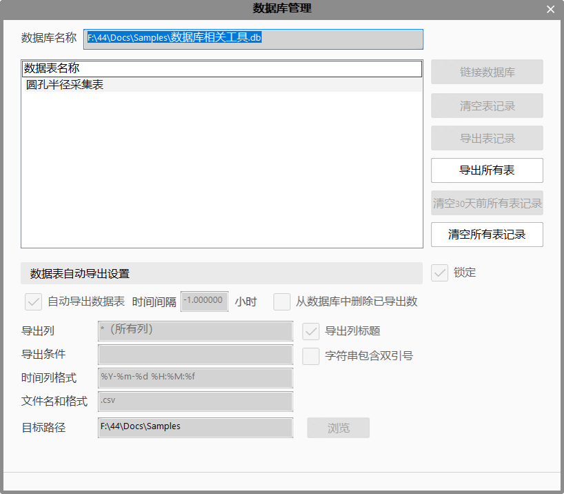
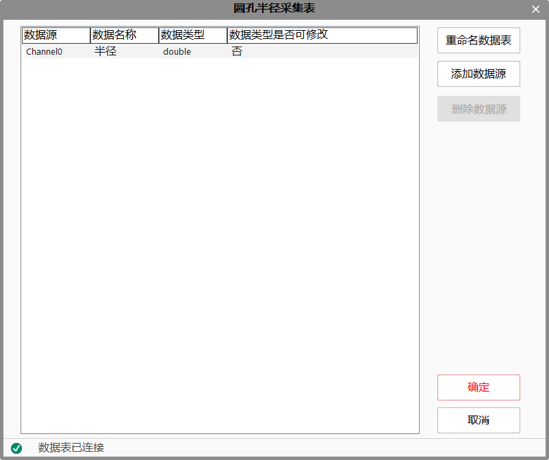

Công cụ thu thập dữ liệu chủ yếu dùng để thu thập dữ liệu và lưu vào cơ sở dữ liệu. Đồng thời, còn có thể thực hiện phân tích thống kê đối với dữ liệu đã thu thập. Tổng cộng có thể thu thập 12 loại dữ liệu. Các loại dữ liệu chính có thể thu thập bao gồm: kiểu double, int, bool, string, int64, char, float, long, short, unsigned char, unsigned long và unsigned short.
| Phân loại | Tên tham số | Mô tả tham số |
|---|---|---|
| Cửa sổ thuộc tính | Không có | Không có |
| Cửa sổ hình ảnh | Không có | Không có |
| Chuỗi dữ liệu | Dữ liệu đầu vào (0~255) | Nguồn dữ liệu trong phần thuộc tính nâng cao, có thể tạo tối đa 256 kênh, mỗi kênh tương ứng với một cột trong bảng dữ liệu. |
| Giao diện nâng cao | Nguồn dữ liệu | Hiển thị các nguồn dữ liệu khả dụng, từ Channel0 đến Channel255. |
| Tên dữ liệu | Tên tương ứng của mỗi nguồn dữ liệu. | |
| Kiểu dữ liệu | Kiểu dữ liệu của từng nguồn, thuộc một trong 12 loại. | |
| Cho phép sửa kiểu dữ liệu | Có cho phép chỉnh sửa kiểu dữ liệu hay không. | |
| Đổi tên bảng dữ liệu | Đổi tên bảng dữ liệu đã kết nối trong cơ sở dữ liệu. | |
| Thêm nguồn dữ liệu | Thêm một nguồn dữ liệu mới, tối đa hỗ trợ 256 nguồn dữ liệu. | |
| Xóa | Xóa một nguồn dữ liệu cụ thể. | |
| OK | Lưu các thiết lập đã thực hiện và thoát. Hãy kiểm tra cửa sổ xuất thông báo. | |
| Hủy | Không lưu thiết lập và thoát. | |
| Cửa sổ xuất thông báo | Khi nhấn “OK”, nếu có lỗi sẽ hiển thị trong cửa sổ này, cửa sổ sẽ không đóng ngay lập tức. |
| Phân loại | Tên tham số | Mô tả tham số |
|---|---|---|
| Cửa sổ giám sát | Tên bảng | Tên bảng trong cơ sở dữ liệu được kết nối. |
| Kết quả thực thi | Kết quả thực thi của công cụ. | |
| Thời gian thực thi | Thời gian công cụ thực thi. | |
| Cửa sổ hình ảnh | Không có | Không có |
| Chuỗi dữ liệu | Tên bảng | Tên bảng trong cơ sở dữ liệu được kết nối. |
Không có.
Công cụ này cần sử dụng cùng với cơ sở dữ liệu. Để thực hiện thu thập dữ liệu, trước tiên cần kết nối với cơ sở dữ liệu. Như hình 1 bên dưới, giao diện quản lý cơ sở dữ liệu.
Số lượng nguồn dữ liệu hỗ trợ tối đa là 256. Một công cụ thu thập dữ liệu tương ứng với một bảng trong cơ sở dữ liệu, mỗi nguồn dữ liệu tương ứng với một cột trong bảng. Tên nguồn dữ liệu tương đương với tên cột. Số lượng nguồn quyết định số lượng cột trong bảng.
Sau khi kết nối với cơ sở dữ liệu, mỗi khi thêm một công cụ thu thập dữ liệu, một bảng sẽ được tạo trong cơ sở dữ liệu. Tên bảng là duy nhất. Thông qua thuộc tính nâng cao của công cụ thu thập dữ liệu, có thể thêm/xóa nguồn dữ liệu (tức là cột), đặt kiểu dữ liệu cho nguồn (kiểu dữ liệu của cột), đổi tên bảng, v.v. Xem hình 2 bên dưới, thuộc tính nâng cao.


参见“\Samples\数据库相关工具.gvp”。